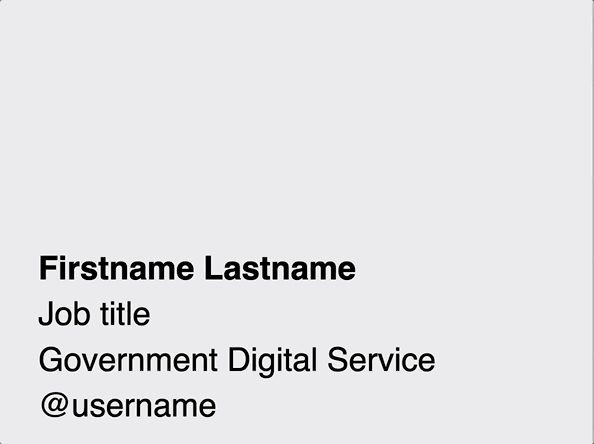
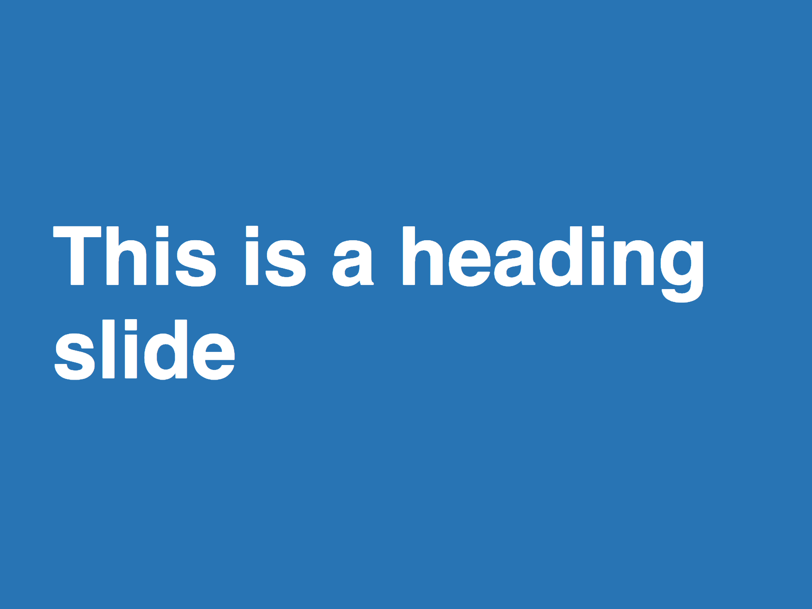
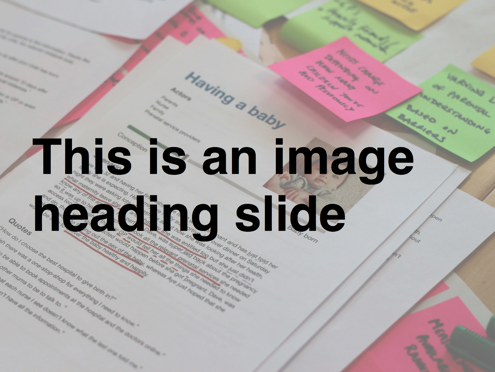
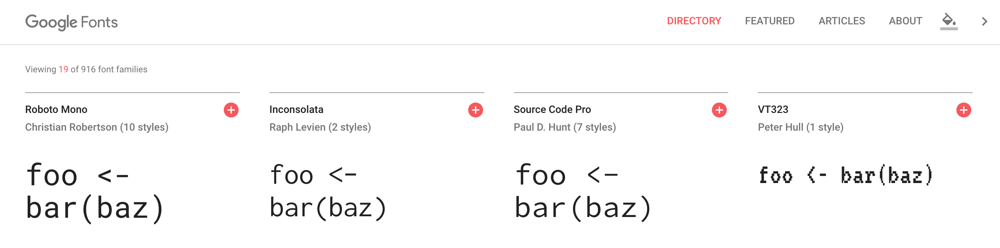
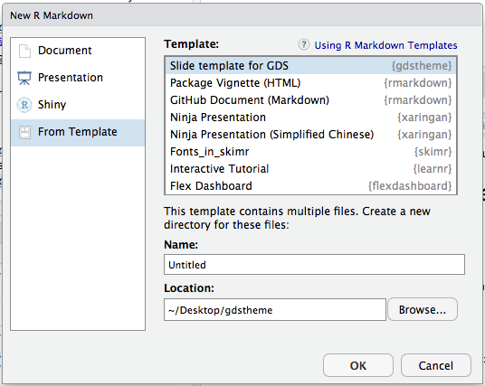

tl;dr
You can make themes for reproducible {xaringan} presentations. I made one for my organisation, the Government Digital Service.
A remarkable ninja
The {xaringan} package by Yihui Xie implements remark.js1 in R Markdown so you can create exciting presentations that contain reproducible R content.2
Yihui has encouraged people to submit styles—like the RLadies theme—to enrich {xaringan}.
This post is about a specific theme I recreated for {xaringan} and shared in the {gdstheme} package along with an R Markdown template.
Click on the slides embedded below and cycle through with your arrow keys, or you can open them fullscreen in a dedicated browser tab.
Create a theme
The organisation I work for uses a Google Slides template with pre-set styles and slide layouts. The template was designed with a particular philosophy in mind.
The downside is that any R outputs have to be copy-pasted in, which isn’t very reproducible.
To overcome this, I recreated their theme for {xaringan} in three steps (click to jump):
Do it in style
CSS lets you define the style of HTML documents, which is the default output for {xaringan}.
For {xaringan} you’ll typically need two CSS files:
theme.cssto define the style for each broad slide class (e.g. a heading-slide class) and for general things like table design and hyperlink colourstheme-fonts.cssto set the typefaces, which you can define separately for the body text, headers, etc
You reference these files in the YAML header of your {xaringan} R Markdown and the style is enacted when you render it to HTML.
I tweaked the default {xaringan} CSS files to create my own, which you can see in the the GitHub repo.
You can check out the {xaringan} wiki for help and ideas.
Get to class
I overwrote the default .remark-slide-content class for regular text slides. In other words, failing to specify a class in your {xaringan} slide will result in a text slide by default. I also created title-slide and heading-slide classes.
Here’s the CSS for defining and styling the very simple heading-slide class:
.heading-slide {
background-color: #2372b6; /* blue background */
color: #fff; /* white text*/
text-shadow: 0 0 0; /* no text shadow */
border-bottom: 0; /* no border */
font-size: 90px; /* large text size */
font-weight: bold; /* headings are bold */
}And here’s how it looks:

You use it by specifying class: heading-slide in the R Markdown for a {xaringan} slide. You also ass the middle class to make the text vertically centred. This will overwrite the default styles to give you the ‘heading’ slide instead.
Tag team
As well as specifying classes, I’ve added some additional CSS tags that can be used for some minor text modifications:
.black { color: #000; } /* black text for heading slides */
.bold { font-weight: bold; } /* embolden name on title/end slides */These can be used to define different styling for a small part of a slide class. For example, the .black tag is intended for use on heading slides so the default white text can be made darker to contrast with light-coloured backgrounds.

Face the font
The fonts.css is much simpler; it just imports and declares fonts. These can be the default system fonts or can be imported from Google Fonts

My organisation uses the proprietary Helvetica for its body type. Fortunately the default system sans-serif is Helvetica on a Mac and the close-enough Arial on Windows machines.
For the monospace font—used for displaying script—I’ve chosen Fira Mono, which I think is more readable than the default system monospace.
The fonts.css file starts by importing from Google Fonts and then describes where they’ll be used. The order of dictates which font will be shown first and then which will be next if there’s a problem.
@import url('https://fonts.googleapis.com/css?family=Roboto');
@import url('https://fonts.googleapis.com/css?family=Fira+Mono');
body { font-family: sans-serif, 'Roboto'; }
.remark-code, .remark-inline-code { font-family: 'Fira Mono', monospace; }I’ve written a bit before about how to access Google Fonts for Blogdown’s Lithium theme.
Lay down a template
The style is not the only important part of recreating my organisation’s presentations. I also need to create an R Markdown template to demonstrate a restricted set of accepted slide designs. The design philosophy is important to the organisation.
The template itself is just a pre-filled R Markdown that shows the approved slide types and some example content. For example, the first slide of my organisation’s template doesn’t actually contain a ‘title’. Instead it’s an introduction slide that contains the speaker’s name, job, affiliation and Twitter handle.
For example, the user may not know to set class: title-slide and add seal: false in the YAML to override the creation of a default title slide. This is instead pre-specified for the user in the template:
---
output:
xaringan::moon_reader:
css: ["default", "gds.css", "gds-fonts.css"]
seal: false
lib_dir: libs
nature:
highlightStyle: github
highlightLines: true
countIncrementalSlides: false
---
class: title-slide, middle
.bold[Firstname Surname]
Job title
Government Digital Service
@username
---The top half of the code is the YAML that provides metadata for the R Markdown file. Note the reference to the CSS files and seal: false as mentioned.
The bottom half is the pre-filled opening slide with the speaker’s details; the user needs only to modify the filler text. Note the use of the title-slide class and the middle class for vertical alignment. There’s also the .bold[] tag mentioned earlier in this post.
Deliver your package
So how can the CSS and R Markdown template be delivered to people in one bundle? In a package of course.
You need a specific repo structure to provide your template. This is all explained in the Document Templates chapter of the ‘R Markdown: a Definitive Guide’ book by Yihui Xie, JJ Allaire and Garrett Grolemund.
At the very least, your repo will need to contain the path inst/rmarkdown/templates/your-theme/skeleton/, which will typically contain three files:
theme.cssfor the slide stylestheme-fonts.cssfor the font face specificationsskeleton.Rmdfor the template you created
I’ve also included an img/ folder to hold stock images I’ve used in the template, but this isn’t strictly necessary.
You’ll also need a template.yaml file one level up in inst/rmarkdown/templates/your-theme/. This contains information about the template so users know which one they’re selecting. For example:
name: "Organisation X template"
description: Internal slide style for Organisation X
create_dir: falseA user can now install the package and get access to your styles and template.
Show the thing
You’ve written your code and packaged it, so how do you actually use it?
If hosted on GitHub, like my package, you can install it with:
# install.packages("remotes")
remotes::install_github("matt-dray/gdstheme")After installation the template will appear in the ‘from template’ section of the new R Markdown window. Selecting it will open the R Markdown template.

The CSS files referenced in the YAML are used to render the style provided when you knit the document.
All hands on deck
My package is a success if the outputs are reproducible and can fool my colleagues. There’s definitely improvements that can be made, but the number of users for this package is very small and it’s probably not worth the effort for now. Feel free to make a pull request to make it better.
Consider creating your own theme and submitting it to {xaringan} so that more possibilities are available out of the box. Also take a look at Garrick Aden-Buie’s helpful {xaringanthemer} package for a simple way to tweak styles.
Environment
Session info
Last rendered: 2023-08-01 19:37:45 BSTR version 4.3.1 (2023-06-16)
Platform: aarch64-apple-darwin20 (64-bit)
Running under: macOS Ventura 13.2.1
Matrix products: default
BLAS: /Library/Frameworks/R.framework/Versions/4.3-arm64/Resources/lib/libRblas.0.dylib
LAPACK: /Library/Frameworks/R.framework/Versions/4.3-arm64/Resources/lib/libRlapack.dylib; LAPACK version 3.11.0
locale:
[1] en_US.UTF-8/en_US.UTF-8/en_US.UTF-8/C/en_US.UTF-8/en_US.UTF-8
time zone: Europe/London
tzcode source: internal
attached base packages:
[1] stats graphics grDevices utils datasets methods base
loaded via a namespace (and not attached):
[1] htmlwidgets_1.6.2 compiler_4.3.1 fastmap_1.1.1
[4] cli_3.6.1 tools_4.3.1 htmltools_0.5.5
[7] xaringanExtra_0.7.0 rstudioapi_0.15.0 yaml_2.3.7
[10] rmarkdown_2.23 knitr_1.43.1 jsonlite_1.8.7
[13] xfun_0.39 digest_0.6.33 rlang_1.1.1
[16] evaluate_0.21 Footnotes
Yihui has commented on why he loves remark.js.↩︎
You can learn more about the basics of {xaringan} from Alison Hill’s excellent slideshow.↩︎
Reuse
CC BY-NC-SA 4.0